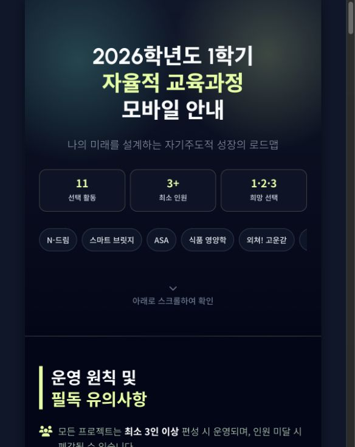
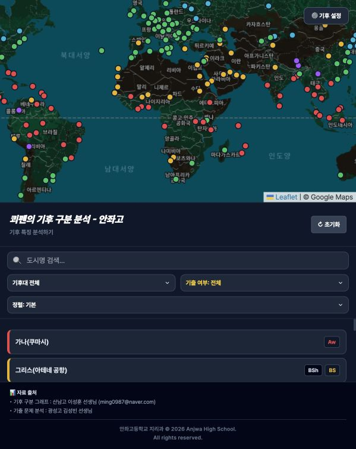
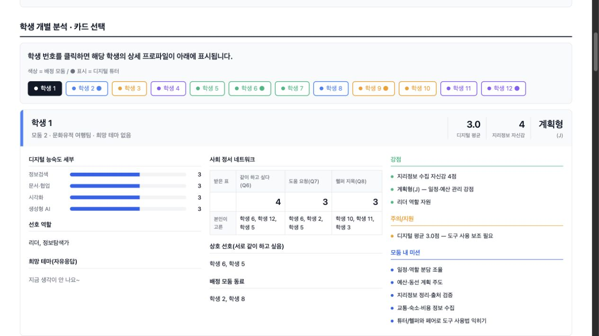

안내 페이지
학생과 학부모가 한 주소에서 확인하는 안내판
일정, 대상, 준비물, 신청 방법을 한 화면에 모을 때 적합합니다. 자주 묻는 질문도 함께 정리할 수 있습니다.
이 챕터는 프로그램별 실제 진행 순서를 확인하는 곳입니다. 제작 흐름을 먼저 보고 왔다면, 지금 필요한 목적별 버튼이나 프로그램별 버튼을 눌러 세부 방법을 펼쳐보세요. 다만 이 설명은 프로그램의 가능성을 닫아두기 위한 목록이 아니라, 선생님의 수업 아이디어를 확장하기 위한 출발점입니다.
이 영역은 실제 프로그램 사용법입니다. 먼저 수업 기능을 고르고, 필요하면 웹 배포·웹앱 확장·데이터 저장 같은 운영 기반을 붙여서 확인하세요.
안내 페이지를 만들고 싶다면 Canva AI/웹페이지, Google Sites처럼 진입 장벽이 낮은 도구부터 확인합니다.
프로그램별 설명이 길게 느껴진다면 아래 네 가지 질문만 먼저 확인하세요. 이 질문에 답하면 어떤 도구를 열어야 하는지, 어디서 막힐지, AI에게 무엇을 물어야 하는지가 보입니다.
읽기, 누르기, 제출하기, 다시 확인하기 중 하나로 먼저 나눕니다. 읽기만 하면 안내 도구, 누르면 활동 도구, 제출하면 응답 도구가 필요합니다.
Canva, Google Sites, Genially는 화면 안에서 만들고 공유할 수 있습니다. AI가 만든 `index.html`은 Netlify, GitHub Pages, Cloudflare Pages 같은 배포 도구가 필요합니다.
단순 제출은 Forms나 Tally가 쉽습니다. 계속 확인할 현황은 AppSheet를 검토합니다. 직접 만든 웹앱의 데이터 저장은 Supabase나 Firebase가 필요할 수 있습니다.
학생 이름, 얼굴 사진, 학번, 성적, 내부 문서 링크가 들어가면 배포보다 먼저 공개 범위와 권한을 확인합니다.
| Canva AI | 첫 성공 기준은 “학생이 한 화면에서 활동 순서와 버튼을 이해하는가”입니다.교사용 표 정리와 차트는 Canva Sheets로 시작할 수 있습니다.학생 제출을 안전하게 모아야 하면 Forms, Tally, AppSheet와 비교합니다. |
|---|---|
| Google Sites | 첫 성공 기준은 “학생 계정에서 자료와 설문이 모두 열리는가”입니다.사이트 공개와 Drive 파일 공개는 따로 확인해야 합니다. |
| Genially | 첫 성공 기준은 “모든 버튼, 팝업, 퀴즈 이동이 작동하는가”입니다.점수나 제출 기록은 외부 폼과 연결하는 편이 안전합니다. |
| Tally·Forms | 첫 성공 기준은 “학생이 제출하고 교사가 응답을 확인할 수 있는가”입니다.이름을 꼭 받아야 하는지부터 줄여봅니다. |
| AppSheet | 첫 성공 기준은 “시트의 열 이름과 앱 화면이 교사의 관리 목적에 맞는가”입니다.처음에는 교사용 내부 앱으로 테스트합니다. |
| Netlify | 첫 성공 기준은 “`index.html`이 들어 있는 폴더를 올렸을 때 주소가 생기고 이미지까지 보이는가”입니다.파일 하나만 올리면 이미지가 빠질 수 있습니다. |
| GitHub Pages | 첫 성공 기준은 “저장소에 `index.html`을 올리고 Pages에서 main 또는 master 브랜치를 선택했는가”입니다.저장소를 온라인 자료함으로 이해하면 쉽습니다. |
| Cloudflare Pages | 첫 성공 기준은 “GitHub 저장소와 연결해 자동 배포가 되는가”입니다.GitHub가 아직 낯설면 Netlify로 먼저 성공 경험을 만드는 것이 낫습니다. |
| Supabase·Firebase | 첫 성공 기준은 “익명·비민감 테스트 데이터가 저장되고 보안 규칙을 설명할 수 있는가”입니다.실제 학생 개인정보는 학교 정책 확인 후 진행합니다. |
학생이 보는 안내판입니다. 글, 이미지, 버튼, 링크, 카드, 간단 퀴즈가 여기에 들어갑니다.
내 컴퓨터나 도구 안에 있던 결과물을 학생이 열 수 있는 주소로 바꾸는 단계입니다.
학생 응답이 나중에 다시 필요하다면 별도 저장 공간이 필요합니다. 이때부터 개인정보와 권한을 더 엄격히 봅니다.
아래 화면은 특정 프로그램 화면이 아니라, 교사가 직접 만들 수 있는 수업용 결과물 예시입니다. 프로그램을 고르기 전에 “내 수업에는 어떤 결과물이 필요한가?”를 먼저 떠올리는 용도로 보세요.

일정, 대상, 준비물, 신청 방법을 한 화면에 모을 때 적합합니다. 자주 묻는 질문도 함께 정리할 수 있습니다.
오늘 할 일, 자료 보기, 활동하기, 제출하기를 순서대로 보여줍니다. 그러면 학생 질문이 줄어듭니다.

지도, 퀴즈, 카드, 필터처럼 학생이 직접 조작하는 활동에 어울립니다. 조작 과정이 개념 이해로 이어질 때 효과가 큽니다.
마크다운 검토 포인트: 단순 조작보다 개념 정확성, 그래프 판별 포인트, 환경 문제 연결이 중요합니다.

학생 성향, 관심 주제, 모둠 구성, 활동 결과를 요약합니다. 그 결과를 다음 수업 의사결정에 활용할 수 있습니다.
마크다운 검토 포인트: 학생 공개용이 아니라 교사용 수업 설계·모둠 구성·관찰 기록 자료로 다루는 것이 안전합니다.
웹페이지 제작은 프로그램 이름부터 고르는 일이 아닙니다. 안내, 조작, 응답, 배포, 확장, 저장 중 어떤 요소가 필요한지 정하면 도구 선택이 훨씬 쉬워집니다.
학생이 “무엇을 언제 어떻게 해야 하는지” 확인하는 기본 화면입니다. 수업 안내판, 수행평가 설명서, 행사 안내, 학부모 안내처럼 읽고 따라가면 되는 자료에 적합합니다.
학생이 버튼을 누르고, 답을 고르고, 카드를 뒤집고, 지도나 이미지를 탐색하는 활동입니다. 단순히 읽는 자료보다 조작 과정 자체가 학습이 될 때 필요합니다.
학생의 신청, 피드백, 활동 완료, 모둠 상태, 제출 여부를 모으고 확인하는 요소입니다. 웹페이지가 단순 안내문을 넘어 수업 운영 도구가 되는 지점입니다.
내 컴퓨터 안의 HTML 파일을 학생이 주소로 열 수 있게 만드는 과정입니다. Canva, Google Sites처럼 자체 게시 기능이 있는 도구는 배포가 간단합니다. 직접 만든 HTML은 별도 배포 도구가 필요합니다.
여러 화면, 필터, 검색, 점수 계산, 진행 상태 표시처럼 화면이 계속 바뀌는 구조입니다. 이 단계부터 HTML, CSS, JavaScript의 역할을 AI와 함께 점검하는 것이 좋습니다.
웹페이지가 학생 응답이나 활동 기록을 “기억”하게 만드는 요소입니다. 이 단계에서는 API, 백엔드, 데이터베이스, 보안 규칙을 함께 봐야 합니다.
초보자에게 백엔드는 “학생이 보는 화면 뒤에서 저장·조회·확인·전송을 처리하는 역할”로 설명하면 충분합니다. 다만 모든 도구가 같은 수준의 백엔드는 아니므로, 가능 범위와 한계를 함께 봐야 합니다.
Google Forms와 Tally는 학생 응답을 받아 저장해주는 역할을 합니다. 교사는 폼 링크만 연결하면 됩니다. 다만 직접 만든 웹앱처럼 화면과 저장 흐름을 자유롭게 통제하기는 어렵습니다.
Apps Script와 AppSheet는 Google Sheets를 중심으로 작동합니다. 저장, 조회, 자동 이메일, 제출 현황 확인 같은 기능을 만들 수 있습니다. 학교 Google 계정 환경과 잘 맞습니다. 다만 권한과 실행 제한을 확인해야 합니다.
Supabase와 Firebase는 직접 만든 웹앱에 고급 기능을 붙일 때 씁니다. 예: 로그인, 데이터베이스, 저장소, 실시간 동기화 강력하지만 보안 규칙과 개인정보 설계가 중요합니다.
Netlify, Cloudflare, Vercel은 기본적으로 웹페이지를 배포하는 도구입니다. 여기에 Functions, Workers, API Routes 같은 기능을 붙이면 화면 뒤에서 간단한 처리를 하는 백엔드처럼 쓸 수 있습니다.
학생 이름, 성적, 상담 기록처럼 민감한 정보가 들어가면 “기술적으로 가능하다”보다 “학교 정책상 안전한가”가 먼저입니다. 초보자는 익명·비민감 데이터로 먼저 연습하는 것이 좋습니다.
“이 기능은 폼으로 충분한가?”를 먼저 묻습니다. 그다음 “AppSheet나 Apps Script가 필요한가?”를 묻습니다. “Supabase/Firebase까지 가야 하는가?”까지 확인하면 과한 도구 선택을 줄일 수 있습니다.
Canva AI는 대화창에 만들고 싶은 것을 설명하는 방식입니다. 그러면 디자인, 문서, 웹페이지, 간단한 코드 활동을 제안합니다. Gemini의 Canvas처럼 대화 안에서 결과물을 만들어보는 방식으로 이해하면 쉽습니다.
Canva 계정, 수업 주제, 대상 학년을 준비합니다. 넣을 자료, 학생이 해야 할 활동, 연결할 외부 링크도 정리합니다. Canva Sheets를 쓴다면 표로 정리할 항목도 미리 적어둡니다.
안내 웹페이지, 카드뉴스, 수업 문서, 이미지 자료에 잘 맞습니다. OX 퀴즈, 카드형 개념 확인, 간단 코드 활동도 시도할 수 있습니다. 표 기반 결과 정리와 차트 시각화도 가능합니다.
Canva Sheets로 가벼운 표 저장과 시각화는 가능합니다. 하지만 학생별 로그인, 행별 권한, 장기 누적 성적 관리는 어렵습니다. 외부 DB와 연결된 대형 웹앱은 Supabase나 Firebase가 더 적합합니다.
학생용 기기에서 페이지가 열리면 첫 성공입니다. 버튼과 활동이 작동하고, 학생이 다음 행동을 바로 이해하면 충분합니다.
교사가 직접 정리할 표는 Canva Sheets가 편합니다. 학생이 직접 제출하는 원자료는 Google Forms나 Tally 버튼을 연결하는 편이 더 안전할 때가 많습니다.
Canva AI의 버튼 이름과 코드 생성 방식은 바뀔 수 있습니다. Sheets 기능도 계정과 시기에 따라 달라질 수 있으므로 실제 화면 기준으로 확인합니다.
먼저 가운데 큰 입력창을 찾습니다. 여기에는 “무엇을 만들지”를 문장으로 적습니다.
안내 페이지는 디자인이나 Docs, 퀴즈·카드 활동은 코드 유형을 우선 확인합니다.
초안이 나오면 바로 쓰지 말고 학생용 문장, 버튼 크기, 모바일 화면을 기준으로 다시 요청합니다.
활동 현황, 발표 순서, 사전 조사 결과처럼 표로 볼 자료는 Canva Sheets에 넣고 차트나 시각 자료로 연결합니다.
게시 전에는 링크 권한, 학생 개인정보, 모바일 화면을 확인합니다. 학생 기기에서 직접 열어보는 것이 마지막 점검입니다.
“오늘은 무엇을 만들어 볼까요?” 화면에 원하는 결과를 말로 입력하고, AI가 초안을 만들게 할 수 있습니다.
학생 활동 만들기, 디자인, 이미지, Docs, 코드, 동영상 클립처럼 결과물의 종류를 먼저 고를 수 있습니다.
수업 안내, 학부모 안내, 행사 안내, 수행평가 소개, 학생 작품 전시를 모바일 친화적인 한 페이지로 만들 수 있습니다.
Google Forms, Tally, Padlet, Classroom, YouTube, Drive 자료를 버튼으로 연결합니다. 그렇게 하면 학생의 다음 행동을 안내할 수 있습니다.
도입 질문, 활동 단계 안내, 발표 순서, 모둠 미션, 마무리 성찰 질문을 보기 좋은 화면으로 제시할 수 있습니다.
Canva Sheets에 모둠별 주제, 진행 상태, 사전 조사 결과를 저장하고 표·차트·인포그래픽으로 바꿔 안내 페이지 안에 함께 보여줄 수 있습니다.
Canva 안에서 웹사이트로 게시해 주소를 만들고, QR 코드나 학급방 링크로 학생과 학부모에게 공유할 수 있습니다.
학생별 로그인, 누적 기록, 성적 관리, 복잡한 DB 웹앱은 Canva만으로 해결하기 어렵고 별도 도구가 필요합니다.
Canva AI에서 코드 생성 유형을 선택한 뒤 “고등학생용 OX 퀴즈 웹앱을 만들어줘”처럼 말하면 간단한 상호작용 화면을 생성할 수 있습니다.
학생이 답을 누르면 정답 여부와 해설이 바로 보이는 짧은 확인 활동을 만들 수 있습니다.
개념 카드 앞면과 뒷면을 눌러 확인하는 단어 암기, 용어 정리, 사료 해석 활동을 만들 수 있습니다.
개념과 설명, 지역과 특징, 사건과 결과를 짝짓는 활동을 만들 수 있습니다.
지도나 이미지 위의 버튼을 누르면 설명, 힌트, 추가 질문이 뜨는 탐색형 화면을 만들 수 있습니다.
생성된 활동이 학생 기기에서 잘 작동하는지, 제출 기록을 저장해야 하는지, 공개 링크로 충분한지 확인합니다.
Canva Sheets는 Canva 안에서 행과 열로 자료를 저장하는 표 공간입니다. 모둠별 주제, 활동 체크, 발표 순서처럼 교사가 관리할 데이터를 한곳에 모을 수 있습니다.
표 데이터를 차트나 시각 자료로 바꿔 수업 안내 페이지, 발표 자료, 결과 공유 페이지에 넣을 수 있습니다. 숫자만 보여주기보다 “우리 반 선택 결과”처럼 읽히는 화면으로 바꾸기 좋습니다.
답사 준비물 확인, 모둠 역할 배정, 발표 순서, 활동 완료 여부처럼 수업 중 계속 확인해야 하는 내용을 표로 정리할 수 있습니다.
Canva 웹페이지 안에서 안내 화면, 표, 그래프, 활동 링크를 함께 구성해 하나의 수업 흐름으로 보여줄 수 있습니다.
교사가 직접 입력하거나 정리하는 가벼운 데이터는 Canva Sheets에 저장해도 됩니다. 예를 들어 “여행지리 탐구 지역 목록”, “모둠별 진행 상태”, “사전 설문 요약표”처럼 공개해도 부담이 작은 자료가 잘 맞습니다.
학생이 직접 제출하는 이름, 연락처, 점수, 민감한 의견은 Canva Sheets에 바로 모으기보다 Google Forms, Tally, AppSheet처럼 입력 권한과 응답 관리가 분리되는 도구를 먼저 검토합니다.
Canva Sheets는 표 저장과 시각화에는 유용하지만, 학생별 로그인, 행별 접근 권한, 자동 저장 API, 장기 누적 기록 관리가 필요한 데이터베이스와는 다릅니다.
교사용 정리표와 결과 시각화는 Canva Sheets, 학생 제출 접수는 Forms/Tally, 제출 현황 관리 앱은 AppSheet, 직접 만든 웹앱의 저장소는 Supabase/Firebase를 검토합니다.
Canva AI의 입력창에 만들고 싶은 웹사이트를 말로 설명합니다. 예: “수행평가 안내 웹사이트를 만들어줘.”
웹사이트 안내는 디자인이나 Docs, 상호작용 활동은 코드, 짧은 설명 영상은 동영상 클립을 선택합니다.
초안이 나오면 “학생용 문장으로 바꿔줘”, “버튼을 더 명확하게”, “모바일에서 읽기 쉽게”처럼 다시 요청합니다.
Google Forms, Tally, Padlet, Classroom, Drive 자료를 버튼으로 연결해 학생이 다음 행동을 바로 찾게 합니다.
완성 후 웹사이트로 게시하고, 생성된 주소를 학생 기기에서 열어 버튼·글자·이미지가 정상인지 확인합니다.
Canva AI로 웹사이트 만들기 영상을 보며 입력창, 생성 유형, 게시 흐름을 확인합니다.
단원 소개, 탐구 질문, 활동 안내를 30초~1분 영상으로 만들어 웹페이지 첫 부분에 넣을 수 있습니다.
수행평가 방법, 제출 방법, 모둠 활동 순서를 짧은 영상으로 만들어 반복 설명을 줄일 수 있습니다.
학생 작품이나 프로젝트 결과를 짧은 영상으로 정리해 전시 페이지나 학부모 안내 페이지에 연결할 수 있습니다.
Canva에서 만든 동영상 링크를 버튼으로 연결하거나, 다운로드 후 YouTube·Drive에 올려 웹페이지에 삽입합니다.
학생 얼굴, 이름, 목소리, 작품이 영상에 들어가면 공개 범위와 동의 여부를 반드시 확인합니다.
Canva로 동영상 만들기 영상을 보며 장면 구성, 편집, 공유 흐름을 확인합니다.
나는 교사야. Canva AI의 대화창에서 바로 요청할 문장을 만들고 싶어. 수업 주제: 대상 학년: 수업 목표: 학생이 해야 할 활동: 원하는 결과물: 안내 웹페이지 / 학생 활동 / 디자인 / Docs / 코드 생성형 활동 / Canva Sheets 정리 중 선택 다음 기준으로 답해줘. 1. Canva AI 입력창에 바로 넣을 첫 프롬프트 2. 디자인, Docs, 코드 중 어떤 유형을 선택하면 좋은지 3. Canva AI의 코드 생성 기능으로 만들 수 있는 OX 퀴즈, 플래시카드, 매칭 게임, 팝업 활동 아이디어 4. 코드 생성 유형에 그대로 넣을 수 있는 구체 프롬프트 5. Canva Sheets에 저장할 표 항목, 입력 방식, 차트 아이디어 6. Canva Sheets로 충분한 데이터와 별도 응답 도구가 필요한 데이터 구분 7. Canva만으로 가능한 부분 8. Google Forms, Tally, AppSheet, Supabase가 필요한 부분 9. 모바일 화면과 개인정보 공개 범위에서 조심할 점
Canva AI에서 여기까지 했어. 내 화면에 보이는 선택지는 [학생 활동 만들기 / 디자인 / 이미지 / Docs / 코드 / 동영상 클립]이고, 나는 [수업 안내 웹페이지 / 퀴즈 / 플래시카드 / 팝업 설명 / 표 정리]를 만들고 싶어. 지금 막힌 부분: 1. 어떤 생성 유형을 눌러야 하는지 2. 입력창에 어떤 문장으로 요청해야 하는지 3. 웹사이트로 게시하려면 어디를 확인해야 하는지 4. Canva Sheets로 저장해도 되는 데이터인지, 별도 응답 도구가 필요한 데이터인지 내 상황에 맞게 다음 버튼을 누르는 순서와 다시 입력할 프롬프트를 초보자용으로 써줘.
Genially는 학생이 화면을 눌러보며 내용을 확인하는 인터랙티브 콘텐츠에 잘 맞습니다. 방탈출형 수업, 이미지 속 설명 팝업, 단계별 퀴즈, 탐구 미션 안내처럼 조작이 중요한 활동에 활용할 수 있습니다.
Genially 계정, 활동 주제, 넣을 이미지나 지도, 퀴즈 문항, 학생에게 보여줄 미션 흐름
개념 확인 퀴즈, 사료 속 단서 찾기, 지도 이미지 탐색, 방탈출형 복습, 인터랙티브 이미지 설명
학생별 장기 기록이나 성적 관리는 별도 도구가 필요합니다. 공개 링크에 개인정보가 들어가지 않게 주의해야 합니다.
지도, 사료, 사진, 그래프 위에 클릭 지점을 만들고 설명, 힌트, 질문을 팝업으로 보여줄 수 있습니다.
객관식 퀴즈, 순서 맞추기, 정답 확인, 해설 팝업을 넣어 짧은 복습 활동을 만들 수 있습니다.
단서 찾기, 암호 확인, 다음 단계 이동을 연결해 미션형 수업 자료를 구성할 수 있습니다.
지리 지도 탐색, 역사 사료 읽기, 과학 실험 절차 확인, 국어 작품 배경 설명처럼 시각 자료가 중요한 수업에 좋습니다.
Genially 링크를 Google Sites, Canva 웹페이지, HTML 페이지 버튼에 연결하거나 삽입해 수업 흐름 안에 넣을 수 있습니다.
재미있는 장치가 많아도 학습 목표와 직접 연결되지 않으면 산만해질 수 있습니다. 클릭 이유를 분명히 설계해야 합니다.
Genially로 지리 수업용 인터랙티브 이미지 활동을 만들고 싶어. 주제는 "도시 내부 구조와 토지 이용"이야. 다음 기준으로 설계해줘. 1. 첫 화면 안내 문구 2. 학생이 눌러볼 지점 5개 3. 각 지점에 넣을 팝업 설명 4. 중간 확인 퀴즈 3문항 5. 마지막 정리 질문 6. Genially로 충분한 부분과 HTML/JavaScript가 필요한 부분 7. 공개 링크를 공유할 때 개인정보와 저작권에서 조심할 점
Genially에서 인터랙티브 활동을 만들고 있는데 막혔어. 내가 만들려는 활동은 [지도 탐색 / 이미지 설명 / 퀴즈 / 방탈출형 활동]이야. 현재 화면에서 한 일은 [템플릿 선택 / 이미지 삽입 / 버튼 만들기 / 팝업 연결 / 공유 링크 만들기]까지야. 학생이 눌러야 할 지점은 몇 개가 적당한지, 각 지점에 팝업·힌트·질문·다음 화면 이동 중 무엇을 넣어야 하는지, 마지막 제출은 Genially 안에서 처리할지 Google Forms/Tally로 연결할지 알려줘.
Google Sites는 코딩 없이 수업 자료를 한곳에 모으는 가장 접근성 높은 도구 중 하나입니다. Google Drive, Docs, Slides, Forms, Calendar, Maps, Classroom을 쓰는 교사라면 별도 학습 부담이 작습니다.
구글 계정, Drive 자료, 삽입할 문서·슬라이드·설문, 학생에게 보여줄 메뉴 구조, 공개 범위 기준
단원 자료실, 수행평가 안내, 활동지 모음, 학급 프로젝트 허브, 학교 프로그램 안내
Apps Script 웹앱, 구글 폼, 구글 시트를 연결하면 단순 자료실을 넘어 자동화 허브로 확장할 수 있습니다.
교사 계정뿐 아니라 학생 계정에서도 사이트, 문서, 설문, 삽입 자료가 모두 열리면 첫 성공입니다.
예쁜 홍보형 한 페이지가 목표라면 Canva AI가 더 빠르고, 긴 자료실은 Google Sites나 Drive 폴더로 먼저 정리하는 편이 단순할 수 있습니다.
Google Sites 공개 범위와 Drive 파일 공개 범위는 별도입니다. 사이트만 열려 있고 파일이 잠겨 있으면 학생은 자료를 볼 수 없습니다.
처음에는 예쁜 디자인보다 제목과 첫 안내 문구가 중요합니다. 학생이 사이트 목적을 바로 알아야 합니다.
문서, 슬라이드, 설문, 지도는 삽입 메뉴에서 찾습니다. 자료를 넣은 뒤에는 자료 권한도 따로 확인합니다.
게시 버튼은 사이트 주소를 만드는 단계입니다. 공개 대상을 학교 계정, 링크 공개, 전체 공개 중에서 신중히 고릅니다.
교사 계정에서 열리는 것만으로는 부족합니다. 학생 계정이나 로그아웃 상태에서 자료가 열리는지 확인합니다.
단원별 영상, 문서, 활동지, 슬라이드, 지도 링크를 메뉴로 정리해 학생이 다시 찾기 쉽게 만들 수 있습니다.
평가 주제, 일정, 루브릭, 예시 작품, 제출 링크, FAQ를 한곳에 모아 반복 안내를 줄일 수 있습니다.
Docs, Slides, Sheets, Forms, Calendar, Maps, Drive 파일을 삽입해 학교 계정 기반 자료 흐름을 만들 수 있습니다.
제출 상태 조회, 신청 결과 확인, 자동 이메일 안내처럼 Google Sheets 기반 자동화 화면을 붙일 수 있습니다.
전체 공개, 링크 공개, 학교 계정 제한을 선택할 수 있지만, 삽입된 Drive 파일 권한도 따로 확인해야 합니다.
화면 디자인 자유도와 게임형 상호작용은 제한적입니다. 조작형 활동은 Genially나 HTML/JavaScript가 더 적합합니다.
학생이 보는 Google Sites 뒤에서 Apps Script가 시트 저장, 제출 상태 조회, 이메일 발송을 처리하면 가벼운 백엔드 역할을 합니다.
구글 시트에 응답 저장, 신청 결과 확인, 간단한 조회 화면, 자동 이메일 안내, 과제 제출 상태 표시
Apps Script를 웹앱으로 배포해 URL을 만들고, Google Sites의 삽입 또는 Embed 기능으로 연결합니다.
실행 권한, 공개 범위, 학생 개인정보 저장 여부를 확인해야 합니다. “나로 실행”과 “접속한 사용자로 실행”은 데이터 접근 범위가 달라질 수 있습니다.
전문 백엔드처럼 복잡한 로그인, 대규모 동시 접속, 세밀한 데이터 권한 관리를 맡기기에는 한계가 있습니다. 실행 시간과 호출 횟수 제한도 고려해야 합니다.
Google Sheets를 중심으로 신청 현황, 제출 확인, 간단 조회, 자동 안내 정도를 만들 때 가장 현실적입니다.
Google Sites에서 새 사이트를 열고, 사이트 제목과 첫 화면 제목을 학생이 이해하기 쉬운 이름으로 정합니다.
처음부터 예쁘게 꾸미기보다 수업 안내, 자료실, 제출 링크, 평가 기준처럼 학생이 찾을 메뉴를 먼저 나눕니다.
Docs, Slides, Sheets, Forms, Drive 파일을 삽입해 활동지, 발표 자료, 설문, 제출 링크를 한곳에 모읍니다.
컴퓨터 화면뿐 아니라 모바일 미리보기에서 메뉴가 잘 보이는지, 버튼을 누르기 쉬운지 확인합니다.
사이트 공개 범위와 삽입한 Drive 파일 공개 범위를 각각 확인합니다. 사이트만 공개하고 파일이 잠겨 있으면 학생이 열 수 없습니다.
Google Sites로 웹사이트 만들기 영상을 보며 메뉴, 삽입, 게시 흐름을 확인합니다.
공식 문서 확인: Google Sites 삽입 도움말, Apps Script 웹앱 배포 가이드
Google Sites로 고등학교 사회과 수행평가 안내 사이트를 만들고 싶어. 구글 문서, 활동지 PDF, 구글 설문 제출 링크를 넣을 예정이야. 추가로 Apps Script를 활용해 학생이 자신의 제출 상태를 확인하는 기능도 붙이고 싶어. 다음 기준으로 안내해줘. 1. Google Sites 메뉴 구조 2. 첫 화면 안내 문구 3. Drive 파일 권한 점검 목록 4. Google Forms나 Sheets와 연결하는 방법 5. Apps Script 웹앱으로 확장할 수 있는 기능 6. 학생 개인정보와 공개 범위에서 조심할 점
Google Sites로 수업용 사이트를 만드는 중이야. 현재 막힌 부분은 [메뉴 구성 / 구글 문서 삽입 / 구글 설문 연결 / Drive 파일 권한 / 게시 권한 / 모바일 화면]이야. 내가 넣을 자료: - 문서: - 슬라이드: - 설문: - 제출 링크: - 학생에게 공개하면 안 되는 자료: 이 자료를 기준으로 Google Sites 메뉴를 어떻게 나누고, 각 자료의 공유 권한을 어떤 순서로 확인해야 하는지 초보자용 체크리스트로 알려줘.
Tally는 Google Forms처럼 응답을 받는 도구이지만, 화면이 간결하고 조건부 질문을 구성하기 좋습니다. 신청서, 수업 피드백, 간단한 사전 조사, 활동 후 성찰 폼을 빠르게 만들 때 사용할 수 있습니다.
Tally 계정, 질문 목록, 필수 응답 여부, 제출 후 보여줄 안내 문구, 결과를 확인할 교사 계정
Google Forms는 학교 계정과 시트 연동이 편하고, Tally는 간결한 화면과 조건부 질문 구성에 강합니다.
이름, 연락처, 민감한 의견을 받을 때는 왜 필요한지 분명히 안내하고 공개 결과 화면에는 개인 응답을 노출하지 않습니다.
사전 지식, 관심 주제, 희망 활동, 모둠 선택을 짧은 폼으로 받아 수업 설계에 반영할 수 있습니다.
특강 신청, 답사 신청, 발표 순서 신청, 상담 희망 시간을 받아 교사가 결과를 확인할 수 있습니다.
이해도, 어려웠던 점, 다음 시간에 알고 싶은 점을 익명으로 받아 수업 개선 자료로 활용할 수 있습니다.
학생의 선택에 따라 다음 질문을 다르게 보여줄 수 있어, 불필요한 문항을 줄일 수 있습니다.
Canva, Google Sites, HTML 페이지에 버튼으로 연결해 “읽기 → 응답하기 → 다음 활동” 흐름을 만들 수 있습니다.
복잡한 제출 관리, 학생별 진행률, 교사용 대시보드는 AppSheet, Supabase, Firebase가 더 적합할 수 있습니다.
학생이 폼을 제출하면 Tally가 응답을 저장하고 교사에게 결과를 보여줍니다. 이 의미에서는 입력 수집형 백엔드처럼 작동합니다.
신청, 피드백, 익명 의견, 사전 조사처럼 “학생이 한 번 제출하고 교사가 확인하는” 활동에 잘 맞습니다.
학생별 진행률, 로그인 기반 활동, 복잡한 조건 처리, 교사용 맞춤 대시보드는 직접 만든 백엔드보다 자유도가 낮습니다.
응답을 계속 관리해야 한다면 Google Sheets, AppSheet, Supabase와 비교합니다. 단순 수집이면 Tally나 Google Forms가 더 쉽습니다.
응답 데이터가 어디에 저장되는지, 누가 볼 수 있는지, 학생 개인정보를 얼마나 받을지 먼저 정해야 합니다.
“응답을 받기만 하면 된다”면 Tally, “받은 응답을 상태별로 관리해야 한다”면 AppSheet나 시트 기반 관리가 더 적합합니다.
Tally로 수업 후 피드백 폼을 만들고 싶어. 학생 이름은 받지 않고 익명으로 받을 예정이야. 다음 기준으로 질문을 설계해줘. 1. 1분 안에 답할 수 있는 문항 6개 2. 객관식과 서술형의 적절한 조합 3. 조건부 질문을 넣으면 좋은 부분 4. 제출 후 안내 문구 5. 결과를 수업 개선에 활용하는 방법 6. Google Forms가 더 나은 경우와 Tally가 더 나은 경우 비교 7. 개인정보 최소화 원칙
Tally로 학생 응답 폼을 만들고 있어. 목적은 [수업 전 조사 / 신청 / 수업 후 피드백 / 익명 의견 수집]이야. 학생 이름은 [받을 예정 / 받지 않을 예정]이고, 응답 결과는 [교사만 보기 / 일부 요약 공개 / 학급 전체 공유]로 사용할 예정이야. 질문 수가 너무 많지 않은지, 필수 질문과 선택 질문을 어떻게 나눌지, 조건부 질문을 어디에 넣을지, 제출 후 안내 문구와 개인정보 주의 문구를 함께 써줘.
AppSheet는 Google Sheets 표를 바탕으로 입력·조회·체크용 앱을 만드는 도구입니다. 코드를 직접 쓰지 않고도 제출 현황, 모둠 활동 체크, 준비물 확인, 기자재 관리 같은 교사용 관리 앱을 만들 수 있습니다.
Google 계정, 관리할 Google Sheets 표, 입력할 항목 목록, 사용자 권한 기준, 테스트용 계정
제출 현황 확인, 모둠별 활동 체크, 답사 준비물 확인, 기자재 대여 관리, 상담 신청 관리
공개용 홍보 페이지보다 내부 관리 앱에 가깝습니다. 학생 개인정보가 들어가면 접근 권한을 엄격히 설정해야 합니다.
모둠별 자료 제출, 발표 준비, 피드백 완료 여부를 표와 앱 화면으로 확인할 수 있습니다.
답사 준비물, 체크포인트 방문, 현장 기록 제출 여부를 모바일에서 바로 확인하는 앱으로 만들 수 있습니다.
상담 신청, 기자재 대여, 도서 대여, 활동 부스 신청처럼 목록을 관리해야 하는 업무에 사용할 수 있습니다.
학생이 입력한 내용은 제한적으로 받고, 교사는 전체 목록과 상태를 확인하는 내부 관리 화면을 만들 수 있습니다.
기본 데이터가 시트에 남기 때문에, 교사가 표로 수정하거나 내려받아 정리하기 쉽습니다.
학생 개인정보가 들어가면 앱 접근 권한, 시트 공유 권한, 수정 가능 범위를 반드시 분리해야 합니다.
Google Sheets를 데이터 저장소로 둡니다. AppSheet가 입력 화면·조회 화면·수정 화면을 만들어줍니다. 교사용 관리 앱에서는 백엔드와 화면을 함께 제공하는 셈입니다.
제출 현황, 모둠 체크, 답사 준비물, 기자재 대여처럼 표로 관리할 수 있는 업무에 적합합니다.
공개용 웹사이트 디자인 자유도는 낮고, 복잡한 게임형 활동이나 맞춤형 프론트엔드 웹앱에는 맞지 않을 수 있습니다.
시트 공유 권한과 앱 접근 권한이 함께 맞아야 합니다. 학생이 전체 시트를 보거나 수정하지 않도록 화면과 권한을 분리해야 합니다.
학교 계정, 사용자 수, 배포 방식에 따라 사용 조건이 달라질 수 있으므로 실제 수업 전에 계정 정책을 확인합니다.
Google Sheets로 표를 만들 수 있고 그 표를 앱처럼 쓰고 싶다면 AppSheet가 좋은 중간 단계입니다.
Google Sheets와 AppSheet로 모둠 활동 체크 앱을 만들고 싶어. 학생 개인정보는 최소화하고, 교사가 제출 현황을 확인하는 용도야. 다음 기준으로 설계해줘. 1. Google Sheets 열 이름 2. 학생이 입력할 항목 3. 교사만 확인할 항목 4. AppSheet에서 만들 화면 5. 권한 설정에서 조심할 점 6. 학생에게 열 화면과 교사만 볼 화면을 나누는 방법 7. 수업 웹페이지와 연결하는 방법
AppSheet로 Google Sheets 기반 관리 앱을 만들고 있어. 내 시트의 열 이름은 다음과 같아. [열 이름을 그대로 붙여넣기] 이 앱의 사용자는 [교사만 / 학생도 입력 / 학생은 자기 모둠만 입력 / 학생은 조회만]이야. 초보자 기준으로 1. 어떤 열이 학생 입력용인지 2. 어떤 열이 교사용 확인용인지 3. Yes/No, 날짜, 선택 목록으로 바꾸면 좋은 열이 무엇인지 4. 권한을 잘못 열면 어떤 문제가 생기는지 5. 수업 전에 어떤 테스트 데이터를 넣어 확인해야 하는지 알려줘.
Netlify는 초보자가 처음 배포를 경험하기 좋은 도구입니다. `index.html`이 들어 있는 폴더를 끌어다 놓으면 웹주소가 만들어집니다.
Netlify 계정, `index.html`, 이미지·PDF·CSS 파일이 들어 있는 같은 폴더
오늘 바로 공유할 안내 페이지, AI로 만든 HTML 실습 결과, 간단한 수업 자료 페이지
파일 수정 기록 관리에는 GitHub가 더 좋습니다. 장기 운영 자료라면 GitHub 연결을 고려하세요.
`index.html`만 보지 말고 이미지와 CSS가 들어 있는 폴더까지 함께 있는지 확인합니다.
처음 배포는 Git 연결보다 폴더를 직접 올리는 수동 배포가 쉽습니다. 파일 하나가 아니라 폴더 전체를 올립니다.
주소가 생기면 바로 눌러서 글자, 이미지, 버튼을 확인합니다. 내 컴퓨터 화면과 실제 주소 화면은 다를 수 있습니다.
이미지가 안 보이면 대부분 폴더를 함께 올리지 않았거나, 파일명과 HTML 속 경로가 다르기 때문입니다.
AI가 만든 `index.html` 폴더를 끌어다 놓아 바로 웹주소를 만들 수 있습니다.
수행평가 안내, 활동 순서, 자료 링크, 제출 버튼이 있는 정적 웹페이지를 빠르게 공유할 수 있습니다.
브라우저 안에서만 작동하는 퀴즈, 카드 뒤집기, 계산기, 지도 안내 화면을 올릴 수 있습니다.
처음에는 다시 드래그앤드롭으로 수정하고, 익숙해지면 GitHub와 연결해 자동 배포할 수 있습니다.
Google Forms, Tally, Supabase, Firebase 링크나 코드를 연결해 응답 수집 기능을 붙일 수 있습니다.
학생 응답 저장 기능은 Netlify 자체 기능이 아닙니다. 저장이 필요하면 폼이나 데이터베이스 도구를 함께 써야 합니다.
Netlify는 기본적으로 HTML, CSS, JavaScript 파일을 웹주소로 공개하는 배포 도구입니다. 파일만 올리는 단계에서는 백엔드가 아닙니다.
Netlify Forms나 Functions 같은 기능을 쓰면 폼 제출 처리, 간단한 API, 외부 서비스 연결을 할 수 있습니다.
간단한 문의 폼, 외부 API 호출, 비밀 키를 브라우저 코드에 직접 노출하지 않는 중간 처리에 활용할 수 있습니다.
처음 배포를 배우는 단계에서는 Functions 설정이 어렵게 느껴질 수 있습니다. 학생 응답 장기 관리는 Supabase나 Firebase가 더 명확할 수 있습니다.
비밀 키, 학생 개인정보, 외부 API 연결이 들어가면 단순 배포와 달리 보안 점검이 필요합니다.
첫 배포는 드래그앤드롭으로 끝내고, 저장·처리가 필요해질 때 Forms나 Functions를 별도 단계로 검토합니다.
내가 만든 index.html 파일을 Netlify에 올려서 웹페이지로 공유하고 싶어. 초보자 기준으로 폴더 준비, 드래그앤드롭 배포, 주소 확인, 이미지 깨짐 해결 방법까지 단계별로 설명해줘. 추가로 이 페이지에 Google Forms나 Tally 링크를 연결할 때 확인할 점도 알려줘.
Netlify에 HTML 폴더를 올렸는데 문제가 생겼어. 내 폴더 구조는 아래와 같아. [폴더 안 파일 이름을 그대로 적기: index.html, assets 폴더, 이미지 파일 등] 문제 상황: - 웹주소는 만들어짐 / 만들어지지 않음 - 글자는 보임 / 안 보임 - 이미지는 보임 / 깨짐 - 버튼 링크는 작동함 / 작동하지 않음 - 모바일에서 잘 보임 / 잘리지 않음 이 상황에서 어디를 먼저 확인해야 하는지, 파일 이름, 폴더 위치, 이미지 경로, 다시 업로드 순서까지 초보자용으로 점검해줘.
GitHub Pages는 파일을 온라인 저장소에 올리고 Pages 기능으로 공개하는 방식입니다. 수행평가 안내, 교과 자료실, 동료 교사 공유 자료처럼 계속 수정할 페이지에 좋습니다.
GitHub 계정, 새 저장소, `index.html`, 필요한 이미지·PDF 파일, Pages 설정
매년 수정하는 평가 안내, 여러 페이지짜리 자료집, 동료 교사와 함께 관리할 자료
저장소는 웹페이지 파일을 보관하는 온라인 폴더라고 이해하면 됩니다.
저장소는 온라인 파일함입니다. 이름은 영어로 짧게 쓰고, 처음 공개 웹페이지 실습은 Public이 이해하기 쉽습니다.
`index.html`과 관련 폴더를 올린 뒤 Commit changes를 눌러야 저장됩니다. Commit은 저장 도장입니다.
Pages는 저장소 파일을 웹주소로 공개하는 스위치입니다. 처음에는 Branch를 main, 폴더를 /root로 확인합니다.
주소가 바로 안 보이면 1~2분 기다린 뒤 새로고침합니다. 404가 나오면 `index.html` 위치부터 확인합니다.
수행평가 안내, 교과 자료실, 동료 교사용 자료처럼 매년 수정할 페이지를 저장소에 보관할 수 있습니다.
언제 어떤 파일을 바꿨는지 기록이 남아, 작년 자료를 바탕으로 올해 자료를 고쳐 쓰기 좋습니다.
`index.html`, `pages/start.html`, `pages/check.html`처럼 여러 페이지짜리 안내서를 체계적으로 관리할 수 있습니다.
동료 교사와 같은 저장소를 보며 자료를 고치거나, 공개 저장소로 수업 자료를 공유할 수 있습니다.
저장소의 Pages 기능을 켜면 GitHub 주소로 정적 사이트를 공개할 수 있습니다.
Public 저장소에 학생 정보나 내부 자료가 올라가지 않게 확인해야 합니다. 비공개 자료는 링크 권한을 따로 관리합니다.
인터넷 바다에 들어가기 위한 여권을 만드는 단계입니다. 이메일과 비밀번호, 사용자 이름이 필요합니다.
내 웹페이지 파일을 올려둘 작은 섬 또는 온라인 보관함입니다. 줄여서 저장소라고 부릅니다.
섬에 세우는 첫 안내 표지판입니다. 방문자가 주소로 들어왔을 때 가장 먼저 보게 되는 파일입니다.
“이 파일을 이 상태로 저장합니다”라고 도장을 찍는 과정입니다. GitHub에서는 저장을 commit이라고 부릅니다.
내 저장소 안 파일을 바깥 사람들이 볼 수 있게 다리를 놓는 기능입니다.
학생이나 동료 교사에게 공유할 수 있는 실제 웹주소입니다. 이 주소가 생겨야 배포가 끝난 것입니다.
GitHub Pages로 index.html 웹페이지를 배포하고 싶어. 나는 GitHub를 처음 써. 저장소 만들기, 파일 업로드, Pages 설정, 주소 확인, 수정 후 다시 반영하는 방법을 버튼 이름 중심으로 설명해줘. 추가로 공개 저장소에 올리면 안 되는 학생 개인정보와 학교 내부 자료 예시도 알려줘.
GitHub Pages로 배포하려고 하는데 막혔어. 현재 한 일: 1. 저장소 이름: 2. Public/Private 여부: 3. 올린 파일 목록: 4. index.html 위치: 5. Settings → Pages에서 선택한 Branch: 6. Pages 주소가 보이는지: 문제는 [404가 나옴 / 주소가 안 생김 / 이미지가 깨짐 / 수정했는데 반영이 안 됨]이야. 저장소는 온라인 폴더, Commit은 저장, Pages는 공개 주소 만들기라는 식으로 쉽게 설명하면서, 어디를 다시 확인해야 하는지 순서대로 알려줘.
Cloudflare Pages는 GitHub 저장소와 연결해 자동 배포할 수 있습니다. 미리보기 배포, 이전 버전 확인, 커스텀 도메인 연결까지 고려하면 오래 운영할 수업 사이트에 어울립니다.
Cloudflare 계정, GitHub 계정, GitHub 저장소, 배포할 HTML 또는 프론트엔드 프로젝트
GitHub 기반으로 자료를 계속 고치고, 자동 배포와 버전 관리를 함께 쓰고 싶을 때
수정 전 미리보기, 이전 버전 되돌리기, 커스텀 도메인 연결을 고려할 때 장점이 커집니다.
GitHub에 파일을 수정해 올리면 Cloudflare Pages가 새 버전을 다시 배포합니다.
수정 버전을 먼저 확인하고, 문제가 있으면 이전 배포 버전으로 되돌리는 운영 흐름을 만들 수 있습니다.
학교나 교과 이름이 들어간 별도 주소를 연결하고 싶을 때 검토할 수 있습니다.
학기나 연도별로 계속 수정하는 교과 자료실, 프로젝트 안내서, 동료 교사용 공유 사이트에 적합합니다.
HTML 한 장짜리 사이트부터 프론트엔드 프로젝트까지 GitHub 저장소를 기준으로 배포할 수 있습니다.
GitHub 저장소와 연결되므로 공개 저장소에 학생 개인정보나 내부 자료가 올라가지 않았는지 먼저 확인해야 합니다.
Cloudflare부터 열지 말고, 먼저 GitHub Pages 안내의 앞부분처럼 GitHub 가입, 저장소 만들기, `index.html` 업로드를 끝냅니다.
처음에는 `index.html`을 폴더 깊숙한 곳에 넣지 말고 저장소 첫 화면에서 바로 보이게 두는 것이 좋습니다.
GitHub 저장소를 지켜보다가 파일이 바뀌면 새 버전으로 다시 배포합니다. 장기 운영용 자동 게시판에 가깝습니다.
아래 네 가지 중 3개 이상이 편하게 느껴질 때 시작하는 것이 좋습니다.
오늘 처음 HTML을 올리는 상황이라면 Cloudflare보다 Netlify 수동 배포가 더 쉽습니다. GitHub 저장소가 아직 낯설다면 GitHub Pages 안내의 가입·저장소 만들기 부분부터 먼저 확인하세요.
GitHub에 파일을 수정하고 commit했을 때 Cloudflare Pages가 자동으로 새 주소 또는 새 버전을 배포하면 성공입니다.
Cloudflare Pages는 기본적으로 정적 사이트와 프론트엔드 프로젝트를 배포하는 도구입니다. Pages만 쓰면 백엔드가 아닙니다.
Workers, Pages Functions, D1, KV, R2 같은 기능을 함께 쓰면 API, 간단 데이터 저장, 파일 저장, 서버 처리 역할을 만들 수 있습니다.
장기 운영하는 웹앱, 빠른 응답이 필요한 API, 정적 사이트에 작은 서버 기능을 붙이는 경우에 적합합니다.
초보자에게는 Pages, Workers, D1, KV의 차이가 어렵습니다. HTML 첫 배포 단계라면 Netlify나 GitHub Pages가 더 쉽습니다.
Workers나 데이터 저장 기능을 쓰면 공개 범위, 환경 변수, 접근 권한, 로그에 남는 데이터까지 확인해야 합니다.
Cloudflare는 “GitHub 자동 배포에 익숙해진 뒤, 서버 기능도 붙이고 싶을 때” 검토하는 운영형 선택지로 설명하는 것이 좋습니다.
웹사이트를 공개용 파일로 포장할 때 실행하는 명령입니다. 단순 `index.html`은 포장 과정이 없으므로 보통 비워두면 됩니다. 무엇을 넣어야 할지 모르겠다면 임의로 입력하지 말고, 현재 화면과 파일 구조를 AI에게 보여주고 확인하세요.
Cloudflare가 실제로 공개할 파일이 들어 있는 위치입니다. `index.html`이 어디에 있는지 알려주는 칸이라고 보면 됩니다.
저장소 안에 여러 프로젝트가 있을 때 시작 위치를 정하는 설정입니다. 처음에는 건드리지 않는 편이 쉽습니다.
Cloudflare Pages로 GitHub에 있는 index.html 사이트를 배포하고 싶어. 나는 초보 교사야. 먼저 아래 조건이 준비되었는지 확인해줘. 1. GitHub 계정이 있는지 2. GitHub 저장소가 있는지 3. index.html이 저장소 어디에 있는지 4. 학생 개인정보나 내부 자료가 저장소에 들어 있지 않은지 그다음 Cloudflare Pages에서 GitHub 연결, 저장소 선택, production branch, build command, output directory, 배포 주소 확인, 미리보기 배포와 실제 공개 주소 차이를 차례대로 설명해줘.
Cloudflare Pages로 GitHub 저장소를 배포하려고 해. 내 사이트는 [정적 HTML 한 장 / 여러 HTML 파일 / React·Next 프로젝트] 중 하나야. index.html 위치는 [저장소 맨 위 / public 폴더 / dist 폴더 / 잘 모르겠음]이야. Cloudflare Pages 설정에서 Build command를 비워도 되는지, Output directory에 무엇을 써야 하는지, 배포 실패 로그에서 어떤 문장을 AI에게 보여줘야 하는지, 미리보기 배포와 실제 공개 주소를 어떻게 구분하는지 알려줘.
Vercel은 React, Next.js 같은 프로젝트형 웹앱을 배포할 때 강합니다. 퀴즈, 대시보드, 지도 탐색, 여러 화면이 있는 웹앱을 만들 때 검토할 만합니다.
Vercel 계정, GitHub 저장소, 프론트엔드 프로젝트, AI 또는 코드 편집 도구
반응형 퀴즈, 학습 진행 표시, 자료 탐색 앱, 지도 기반 활동, 데이터 시각화
HTML 한 장 배포보다 어렵습니다. 먼저 Netlify나 GitHub Pages를 경험한 뒤 넘어가면 좋습니다.
AI나 코드 편집 도구로 만든 React, Next.js 기반 수업 웹앱을 GitHub와 연결해 배포할 수 있습니다.
여러 화면이 있는 퀴즈, 학습 경로 안내, 대시보드, 탐구 자료 검색 화면을 만들 때 적합합니다.
지도 탐색, 그래프 시각화, 필터 검색, 데이터 카드 비교처럼 화면 상태가 자주 바뀌는 활동에 잘 맞습니다.
GitHub 저장소와 연결하면 코드를 수정할 때마다 새 버전이 자동으로 배포됩니다.
Supabase나 Firebase와 연결해 로그인, 응답 저장, 학습 진행률 같은 기능을 붙일 수 있습니다.
처음 배우는 교사에게는 설정이 많을 수 있습니다. 단순 안내 페이지라면 Netlify나 GitHub Pages가 더 쉽습니다.
Vercel은 React, Next.js 같은 프론트엔드 프로젝트를 배포하는 데 강합니다. 단순 HTML 한 장 배포에는 과할 수 있습니다.
Next.js API Routes, Serverless Functions, Server Actions 같은 구조를 쓰면 화면 뒤에서 데이터 처리나 외부 API 연결을 할 수 있습니다.
로그인, 대시보드, 검색, 추천, 데이터 시각화처럼 여러 화면과 서버 처리가 섞인 프로젝트형 웹앱에 어울립니다.
프로젝트 구조, 빌드 명령, 환경 변수, API 경로를 이해해야 하므로 초보자의 첫 웹페이지 제작 도구로는 부담이 큽니다.
서버 함수에 학생 데이터를 다룬다면 권한, 환경 변수, 로그, 데이터베이스 보안 규칙을 함께 점검해야 합니다.
AI가 React/Next.js 프로젝트를 만들어줬고 배포와 서버 처리를 함께 해야 할 때 선택합니다. HTML 안내 페이지라면 다른 배포 도구가 더 쉽습니다.
Vercel로 학생용 퀴즈 웹앱을 배포하고 싶어. React 프로젝트라고 가정하고 GitHub 연결부터 Vercel 배포까지 설명해줘. Netlify에 HTML을 올리는 방식과 무엇이 다른지도 초보자 기준으로 비교해줘. 추가로 Supabase나 Firebase를 연결해야 하는 경우와 연결하지 않아도 되는 경우를 구분해줘.
Vercel에 웹앱을 배포하려고 하는데 실패했어. 내 프로젝트는 [HTML 한 장 / React / Next.js / 잘 모르겠음]이고, 폴더 안에 package.json이 [있음 / 없음]이야. Vercel에서 보이는 오류 메시지는 아래와 같아. [오류 메시지를 그대로 붙여넣기] 초보자 기준으로 1. Vercel을 써야 하는 상황인지 2. Netlify나 GitHub Pages로 바꾸는 것이 나은지 3. package.json, build command, output directory 중 무엇을 확인해야 하는지 4. Supabase/Firebase 연결 전 먼저 배포만 성공시키는 방법을 알려줘.
Supabase는 표 기반 PostgreSQL 데이터베이스를 웹페이지에 붙이는 백엔드 도구입니다. 학생 응답, 제출 기록, 지도 데이터, 탐구 주제 목록처럼 표로 관리할 데이터를 저장할 때 어울립니다.
Supabase 계정, 프로젝트, 테이블 설계, HTML/JavaScript 코드, 개인정보 최소화 기준
의견 수집, 학습 완료 표시, 간단한 제출함, 지도 좌표 저장, 결과 목록 확인, 반응형 활동 기록
학생 개인정보를 저장할 경우 학교 정책, 동의, 접근 권한을 반드시 검토해야 합니다.
별칭, 모둠, 선택값, 서술형 의견, 제출 시간을 테이블에 저장하고 교사가 목록으로 확인할 수 있습니다.
탐구 주제 등록, 활동 완료 체크, 링크 제출, 모둠별 진행 상황을 웹페이지에서 받아 저장할 수 있습니다.
장소 이름, 위도·경도, 분류, 학생 설명을 저장해 지도 탐색 활동이나 지역 조사 자료로 활용할 수 있습니다.
저장된 데이터를 표로 확인하고, 필요하면 CSV로 내려받아 수업 기록이나 피드백 자료로 정리할 수 있습니다.
Netlify, Vercel, Cloudflare Pages에 올린 HTML/JavaScript 웹앱과 연결해 데이터를 주고받을 수 있습니다.
단순 설문, 신청, 피드백은 Google Forms나 Tally가 더 쉽습니다. Supabase는 직접 만든 웹앱에서 저장이 필요할 때 검토합니다.
웹페이지 뒤에서 데이터베이스, 로그인, 파일 저장, API 연결을 맡을 수 있습니다. 특히 표처럼 행과 열로 관리하는 데이터에 강합니다.
Supabase는 학생 응답을 정리하는 온라인 관리 대장에 가깝습니다. 웹페이지는 접수 창구이고, Supabase는 뒤쪽 보관함입니다.
제출 목록, 의견 수집, 지도 지점, 탐구 주제, 모둠 활동 기록처럼 표로 보고 내려받을 데이터에 적합합니다.
처음에는 테이블, API key, RLS 같은 용어가 낯섭니다. 보안 규칙 없이 공개 웹페이지에 연결하면 다른 학생 응답이 노출될 수 있습니다.
브라우저 코드에는 service role key를 넣지 않습니다. 학생 개인정보를 저장하기 전에는 익명화, 접근 권한, 삭제 기준을 먼저 정합니다.
Google Forms나 Tally로 충분하면 Supabase까지 가지 않아도 됩니다. 직접 만든 웹앱이 데이터를 저장하고 다시 불러와야 할 때 검토합니다.
anon key는 브라우저 코드에 들어갈 수 있지만 RLS 정책이 있어야 안전합니다. service role key는 교사용 마스터키이므로 HTML에 넣지 않습니다.
테스트 응답이 저장되고, 학생이 다른 학생의 응답을 마음대로 읽거나 수정할 수 없다는 것을 설명할 수 있으면 성공입니다.
응답을 모으기만 하면 Forms나 Tally, 표 기반 관리가 목적이면 AppSheet가 더 단순합니다.
HTML 페이지에서 학생 의견을 입력받아 Supabase에 저장하고 싶어. 개인정보를 최소화하려고 해. 테이블 구조, 입력칸 구성, RLS(행 수준 보안) 정책과 보안상 주의할 점, HTML 코드 연결 과정을 초보자 기준으로 설명해줘. 비밀 관리자 키나 service role key를 브라우저 코드에 넣으면 안 되는 이유도 알려줘. 지도 탐구 활동에서 위치 이름, 위도, 경도, 학생 의견을 저장하는 예시도 함께 제안해줘.
Supabase에 학생 응답을 저장하려고 하는데 막혔어. 내가 저장하려는 항목은 [별칭 / 모둠 / 선택값 / 의견 / 제출 시간 / 위치 정보]이야. 현재 만든 테이블 이름과 열 이름은 아래와 같아. [테이블 이름과 열 이름을 그대로 붙여넣기] 문제 상황: - 저장이 안 됨 - 저장은 되는데 다른 학생 응답이 보임 - RLS(행 수준 보안)를 켜야 하는지 모르겠음 - anon key와 service role key 차이를 모르겠음 개인정보를 최소화하는 방향으로 테이블 구조, 입력 화면, 보안 규칙, 테스트 순서를 다시 설계해줘.
Firebase는 Google 기반 백엔드 도구로, 데이터베이스, 실시간 동기화, 로그인, 파일 저장, 호스팅을 함께 제공합니다. 기능이 많은 학습 웹앱을 만들 때 선택지가 되지만, 단순 안내 페이지에는 과할 수 있습니다.
Google 계정, Firebase 프로젝트, 웹앱 코드, Firestore 설정, 보안 규칙 검토
퀴즈 결과 저장, 학습 진행률 저장, 로그인 기반 활동, 실시간 공동 활동, 파일 업로드가 있는 웹앱
설정 항목이 많습니다. 작은 안내 페이지라면 Netlify나 Google Sites가 더 효율적입니다.
여러 학생의 응답이나 상태가 거의 바로 반영되는 활동, 실시간 퀴즈 결과, 공동 체크 화면을 만들 수 있습니다.
Google 로그인 등 인증 기능을 붙여 사용자별 활동 기록이나 접근 권한을 나눌 수 있습니다.
이미지, 첨부 파일, 결과물 파일을 저장하는 구조를 만들 수 있지만 개인정보와 저장 용량 관리가 중요합니다.
Firebase Hosting을 사용하면 웹앱 배포까지 한 서비스 안에서 처리할 수 있습니다.
Google 계정 기반 환경과 잘 맞고, 로그인·데이터베이스·저장소를 한 프로젝트에서 관리할 수 있습니다.
링크 안내, 자료실, 단순 설문은 Firebase까지 갈 필요가 없습니다. 먼저 Canva, Google Sites, Forms, Tally를 검토하세요.
Firebase는 데이터베이스, 로그인, 실시간 동기화, 파일 저장, 호스팅을 묶어서 제공하는 Google 기반 백엔드입니다.
Firebase는 실시간으로 변하는 온라인 활동판에 가깝습니다. 학생들의 상태가 즉시 바뀌거나 로그인별 기록이 필요할 때 강점이 있습니다.
실시간 퀴즈 결과, 로그인 기반 학습 기록, 파일 업로드, 공동 활동 상태 표시처럼 즉시 반영이 중요한 웹앱에 적합합니다.
Firestore 구조, 인증, Storage, 보안 규칙을 함께 이해해야 합니다. 단순 신청이나 피드백에는 기능이 과할 수 있습니다.
테스트 모드 그대로 공개하면 데이터가 노출되거나 수정될 수 있습니다. 학생 파일 업로드는 용량, 저작권, 개인정보 위험도 함께 커집니다.
실시간성, 로그인, 파일 저장이 핵심이 아니라면 Forms, AppSheet, Supabase부터 비교하는 것이 더 안전합니다.
Firebase 웹 설정값은 화면 연결에 쓰이지만, 이것만으로 안전이 보장되지는 않습니다. Firestore와 Storage 보안 규칙이 실제 잠금장치입니다.
테스트 모드가 꺼져 있고, 로그인 여부와 역할에 따라 읽기·쓰기 권한이 다르게 작동하면 성공에 가깝습니다.
실시간 동기화나 로그인별 기록이 필요 없다면 Firebase까지 가지 말고 Forms, AppSheet, Supabase를 먼저 비교합니다.
Firebase로 학생 퀴즈 결과를 저장하는 웹앱을 만들고 싶어. Firestore를 처음 쓴다고 가정해줘. 프로젝트 생성, 웹앱 연결, 보안 규칙에서 조심할 점을 설명하고, 교실 수업에서 개인정보를 최소화하는 방식도 제안해줘. 추가로 Firebase가 필요한 경우와 Google Forms나 Supabase로 충분한 경우를 비교해줘.
Firebase로 수업 웹앱 데이터를 저장하려고 하는데 설정이 어렵다. 내가 필요한 기능은 [실시간 결과 / 로그인 / 파일 업로드 / 퀴즈 점수 저장 / 학습 진행률 저장]이야. 현재 막힌 곳은 [프로젝트 생성 / 웹앱 연결 / Firestore 만들기 / 보안 규칙 / Hosting / 오류 메시지]야. 오류 메시지나 현재 설정: [그대로 붙여넣기] 초보 교사 기준으로 1. Firebase가 꼭 필요한 상황인지 2. Google Forms, AppSheet, Supabase로 더 쉽게 할 수 있는지 3. 테스트 모드 그대로 공개하면 왜 위험한지 4. 학생 개인정보를 최소화하려면 어떤 데이터만 저장해야 하는지 알려줘.
백엔드는 학생이 보는 화면 뒤에서 저장, 조회, 권한, 자동 처리를 맡는 역할입니다. 모든 도구가 같은 수준의 백엔드는 아니므로, 수업 목적과 위험도를 기준으로 골라야 합니다.
| Canva Sheets | Canva 내부 표 저장·시각화형입니다.교사가 직접 관리하는 모둠 현황, 사전 조사 요약, 발표 순서, 활동 체크를 표와 차트로 만들기 좋습니다.학생별 로그인, 행별 권한, 외부 웹앱 API 저장이 필요한 본격 백엔드와는 구분해야 합니다. |
|---|---|
| Google Forms·Tally | 입력 수집형입니다.학생 응답을 받아 저장해주지만, 직접 만든 웹앱처럼 자유로운 조회·수정·권한 구조를 만들기는 어렵습니다. |
| Apps Script | Google 기반 가벼운 백엔드입니다.Sheets 저장, 제출 조회, 자동 이메일, 간단 웹앱을 만들 수 있습니다.다만 실행 권한과 사용량 제한, 공개 범위 확인이 필요합니다. |
| AppSheet | 시트 기반 관리 앱입니다.Google Sheets를 앱처럼 입력·조회·관리하게 해줍니다.공개용 디자인 웹페이지나 복잡한 게임형 활동에는 맞지 않을 수 있습니다. |
| Netlify | 기본은 배포 도구입니다.Forms나 Functions를 붙이면 간단한 서버 처리를 할 수 있습니다.첫 배포 단계에서는 정적 사이트 공개용으로 보는 것이 쉽습니다. |
| Cloudflare | 운영형 배포+서버 기능입니다.Pages, Workers, D1, KV, R2를 조합할 수 있습니다.초보자에게는 설정 개념이 많습니다. |
| Vercel | 프로젝트형 웹앱 배포+서버 함수입니다.React/Next.js 기반 웹앱에서 API 처리까지 할 수 있습니다.HTML 한 장짜리 안내 페이지에는 과할 수 있습니다. |
| Supabase | 표 기반 백엔드입니다.제출 목록, 의견, 지도 데이터처럼 행과 열로 관리할 데이터에 좋습니다.RLS와 API key 개념을 확인해야 합니다. |
| Firebase | 실시간·로그인 중심 백엔드입니다.실시간 퀴즈, 로그인 기반 기록, 파일 저장에 강합니다.단순 설문에는 과하고 보안 규칙 점검이 필수입니다. |
| 개인정보 공통 원칙 | 학생 이름, 학번, 성적, 얼굴 사진처럼 민감한 정보는 가능한 저장하지 않습니다.꼭 필요하다면 학교 정책, 동의, 접근 권한, 삭제 기준을 먼저 정해야 합니다. |